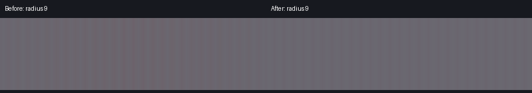

Resource reload median · lower is better
EagerSelected family eager, unused families deferred
Three runs per state, alternating within each client session. All 132 font IDs retain matching measured widths. First use of an unused family still costs approximately 15–19 ms once. Deferral yields to ModernFix.
Launcher mod set · observed median FPS
One short stationary spawn scene per row; RX 9070 XT, 1280×960 OpenGL, portrait monitor, identical other mods and live feature settings. Twenty seconds warm-up and twenty one-second FPS readings. VSync and inactivity caps controlled. The candidate includes the preceding optimization series; this is not a busy-server or GPU-bound benchmark.
Factory-default Aurora CPU overhead · milliseconds
Highest judged meanHighest judged p95
Common scale: 0–0.40 ms. The budget is 0.25 ms mean and 0.40 ms p95. Four judged runs after two warm-ups per fixture; zero UI fills and glass captures. No acceptance helper installed. This is targeted 26.3 evidence, not the full release matrix.
Radius 9 · four-pixel detail translated through four phases

The pattern’s correct average stays constant. The maximum change falls from 55 to 1 out of 255 intensity levels. Captures are from actual renderer output.